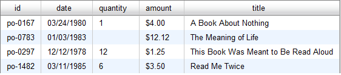
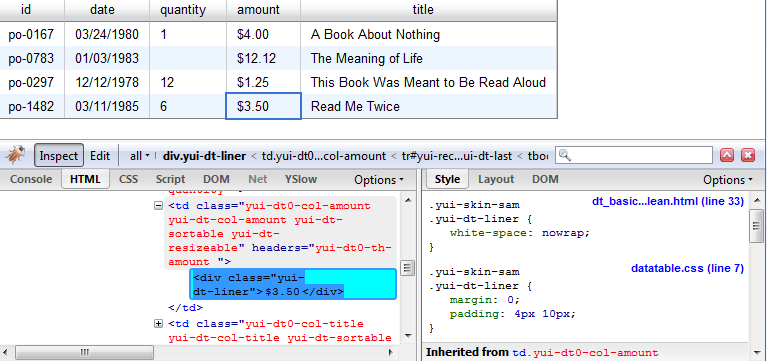
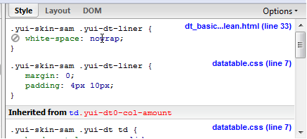
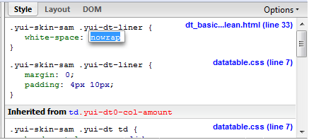
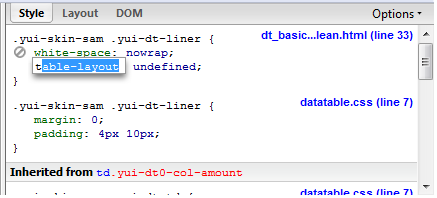
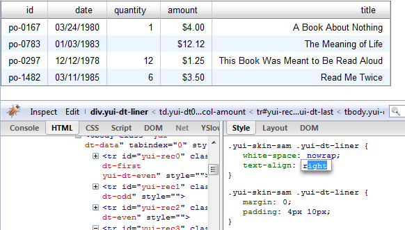
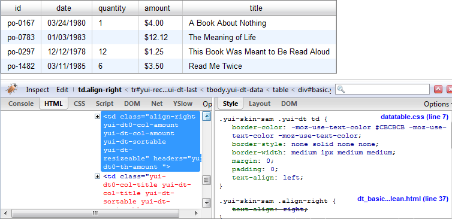
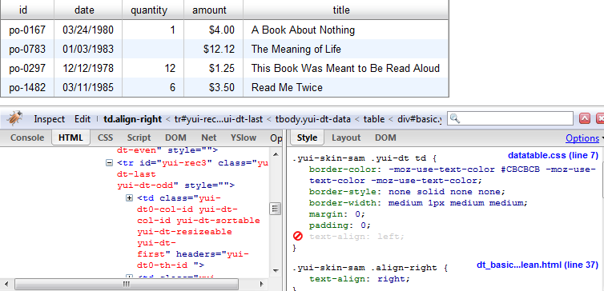

Back to the index of articles and examples
The CSS style sheets that accompany the YUI widgets are quite complex. Attempts to change any CSS attribute by examining those CSS files are bound to be frustrating. A better way to go is to let a DOM inspector find out the active styles for you. The best I've seen so far is the Firebug debugger add-on to Firefox. Since both are free, there can hardly be any question of cost/performance.
I will be using a local copy of the Basic Example of the DataTable widget. All the examples on the YUI site are part of the zipped distribution files so you can do the same on your own copy of them. Initially, the DataTable looks like this:

Lets say I like my numbers aligned right, specially the amount column. First I want to see what does a typical DataTable cell looks like. I fire up the Firebug debugger. If I haven't customized the Firefox toolbar to hold the icon to start Firebug, I will find the Firebug submenu under the Tools menu of Firefox. Firebug will show up either as a floating window or docked to the bottom of the screen, as in this screen capture:

The bluish bar across the middle, with the orange bug icon and the Inspect button depressed to its right is the Firebug menu.
Most of the items in the menu bar will change depending on the tabs selected on each of the subpanels below but
the Inspect button will always be available.
The gray bar right below holds the tabs that select the views for each of the panels. On the left hand side
we have Console, HTML, Script, DOM, Net and, in my case, YSlow, which is a separate add-on which I recommend and finally
Options, which is not a tab but a dropdown button which shows options applicable to the selected tab.
The tabs on the right hand side subpanel will change depending on which tab is selected on the left hand side.
Actually, some of the left panels don't have a right hand side subpanel.
In the image above I have selected the Inspect function. Since it is meant to inspect the HTML in the page,
selecting that function will automatically switch the left panel to the HTML tab and the right panel is restored
to whichever tab was the last you used. Here, it is showing the Style subpanel, which is exactly what
we want. While in the Inspect mode, the cursor is taken over by Firebug and it will not behave as it would
normally do in Firefox. It will surround the HTML elements it detects under the cursor with a blue box and will show the
corresponding HTML for that element in the left subpanel. As you move the cursor around, it will move the highlight and
show the corresponding HTML below. Here, I am hovering over one of the cells containing an amount.
As soon as I click on it, the Inspect function will be deactivated and the HTML for the element I clicked on
will remain selected below and its current styles on the subpanel to the right.
We can see that the amount is contained in a <div>, which is the one we selected by clicking
and is the only contents of the <td> element which is the one we had in mind.
The inner element is called the 'liner' which is contained in the actual HTML table cell and takes almost
all the available space. If the element we picked by clicking is not the one we wanted, we can simply
select the right one by clicking on the HTML subpanel. While we hover the cursor over the HTML tags
on the HTML subpanel, Firebug will highlight the region it occupies in the actual page to help us in locating
the element we want.
From the HTML panel we can see that both the <td> and the <div> elements have
plenty of classNames declared, for example, the liner is of class yui-dt-liner.
In the right hand subpanel we see that there are several style attributes for it:
.yui-skin-sam .yui-dt-liner { dt_basic...lean.html (line 33)
white-space:nowrap;
}
.yui-skin-sam .yui-dt-liner { datatable.css (line 7)
margin:0;
padding:4px 10px;
}
We can see two selectors that include the className yui-dt-liner.
Both include the yui-skin-sam skin selector which allows several skins to
coexist in the same page.
To the right, we see that the first one is declared in line 33 of the very same page,
possibly within an inline <style> so it is specific to this particular example
while the second is declared in datatable.css which is the standard CSS file associated with the DataTable component.
This is quite useful information because you might be changing some style attribute somewhere
which might be canceled out by some other style attribute declared elsewhere you didn't expect.
Firebug will always show the styles sorted in order of preference, the most relevant at the top so, if you were laboriously changing the setting for white space wrapping in the datatable.css file (which you shouldn't anyway) you might see no effect since it is being overridden by a later declaration in the page itself which overrides the default and, possibly, yours. Precedence is very important when assigning styles and Firebug is excellent in showing you the priority they have and, possibly, how they override each other.

If you hover over any style attribute, Firebug will show a gray don't sign, as in the image above,
where you can see the cursor over the nowrap. If you click on that sign, it will turn red
and the style attribute will become inactive, as if it had never been there, with immediate effect on the actual page.
In this example, disabling the nowrap attribute won't make any difference as all the text has enough space,
but in some pages, the changes can be striking.

If you click on the attribute itself, it will turn into an edit box and you can change the value right there. So, it is not just that you can enable and disable a particular style, you can also change values.

Once you have an edit box open, if you press the Tab key, the edit box will move to the next style definition and if you start typing as I did by pressing the letter 't' it will offer the attributes that match whatever you typed. Once you have the style you were looking for, you can press the Tab key again and it will jump to the attribute value field and, once again, just by typing a few characters it will offer valid values, at least in those attributes where the options are limited.
Much of this functionality is accessible from the context menu.

Here, after clicking on on the nowrap attribute (two images above) to open the edit box, I have typed TAB,
't', 'e', which resulted in Firebug volunteering text-align then TAB and finally the 'r' key,
which immediately expanded to right and
as can be seen in the actual DataTable, it had immediate effect on all the cells in the DataTable, even the
'title' column and, more surprisingly, in the table headers themselves, which is more than we wanted.
We have to fine tune this.
We cannot simply right align the text in all liners since all cells have liners. We need to be more specific.
Since the liner element offers no further styles to play with, we go up one level and we see that the
<td> element has a yui-dt-col-amount className and, being the first (and only) DataTable
on the page, it also offers a yui-dt0-col-amount className. You will notice that amount
is the column key value, we can confirm this by moving to neighboring columns and we will see each has a className
made up of the yui-dt-col- prefix plus the column key value.
The YUI library offers lots of such dynamic classNames, they will usually start with yui- then an abbreviation
of the component and/or subcomponent and then something specific to the particular instance, an item number or some meaningful name
such as the column key. That is one further reason
not to trouble oneself with studying the file datatable.css because most YUI components will have lots of classNames
dynamically generated that won't be found there.
Now, this looks more promising, we have found a way to identify each column; however from the point of view of the design of the application it is a little messy because you would be involving the graphical designer in specifically enumerate all the columns in each page that have right-aligned values and that is not good.
If we browse the Column API, we see there is a className column property. We could add a className to all the columns we want right aligned and have the graphic designer use this className in our custom stylesheet, which would then be generic for all DataTables. So, we will do a couple of changes in the source of this example, in the local copy that came with the distribution, wherever you placed it. We will add the following:
<style type="text/css">
.yui-skin-sam .align-right {
text-align:right;
}
</style>
and further down, in the column definitions (see underlined):
var myColumnDefs = [
{key:"id", sortable:true, resizeable:true},
{key:"date", formatter:YAHOO.widget.DataTable.formatDate, sortable:true,
sortOptions:{defaultDir:YAHOO.widget.DataTable.CLASS_DESC},resizeable:true},
{key:"quantity", formatter:YAHOO.widget.DataTable.formatNumber, sortable:true, resizeable:true,
className:'align-right'},
{key:"amount", formatter:YAHOO.widget.DataTable.formatCurrency, sortable:true, resizeable:true,
className:'align-right'},
{key:"title", sortable:true, resizeable:true}
];
which produces this:

Which is not what we wanted, the amounts are still left-aligned.
However, we can see in the bottom left panel, in the section highlighted in blue, that the table cell has
our align-right className added so, at least that went well.
The clue is in the bottom right subpanel where we see at the very bottom
that our style, which we defined in the very same page in line 37
is crossed over meaning that some other style elsewhere has a higher priority.
We don't need to go very far to see which one, just a few lines above
we see that there is a definition in the datatable.css file that
overrode ours: remember, Firebug lists the higher priority ones at the top.
Our style was declared after the datatable.css file was loaded so
it is not simply a matter of who got there when. If we see the selector
for that style we see it says .yui-skin-sam .yui-dt td while ours is
.yui-skin-sam .align-right. In CSS, the more specific a selector is, the more priority it has.
While ours says that any element with a className of align-right with this skin should have this and that attributes,
the built in style is far more specific, it points to table cells within a YUI DataTable,
which has a className of yui-dt within the Sam skin. So, this one is more specific.
The rules for precedence are sometimes a little difficult to figure out but
at least Firebug tells you which is the rule that you have to win over.
One first try is to disable that attribute:

and we see we got what we wanted. By clicking on the don't sign, we disabled the text-align:left style
that won over our definition and we see both that the line through our definition disappears and the text does get right aligned.
Now we are sure what our target is. We then try with the following:
.yui-skin-sam .yui-dt td.align-right {
text-align:right;
}
I admit, this is my shotgun approach, it probably would have worked with less selectors but the ones I used are not
unreasonable, we want cells within a YUI DataTable with the Sam skin with the align-right className and,
indeed, if we try it, our style jumps to the top of the list and the columns are effectively aligned right.
Moreover, we solved an issue we didn't consider. When you set the className property in a column definition
of a DataTable, the className gets applied to both the table cells and the table header cells so, by
including the td tag in the selector we inadvertently prevented our table headers to align right.
We have just played with the example and, just as the example itself has some example-specific styles declared in line,
we did the same with ours. It makes better sense to move the styles to a single place instead of copying over
from page to page. By using a generic className such as align-right we can do this while
the other alternative of using the dynamically generated classNames such as yui-dt-col-amount
would have tied the style definition to this particular page and thus prevented us to move the style to
a generic style sheet.
One place where custom styles should never go is in the CSS files of the YUI distribution. Changing the original distribution files, both CSS and JavaScript files, ends up causing a lot of trouble. Whenever a new version comes out you have to go over the files and apply the changes to them as well. A much easier alternative is to simply override them, thus, your custom CSS file (as any custom JavaScript file with patches) should be included in the pages after the files containing the overridden definitions.
Sometimes you want a column to have icons to allow the users to perform actions on that row. An easy way to do it is adding a column definition like this:
{key:"delete",label:" ",className:"delete-icon"}
The column has no associated field in the DataSource since there is actually no data to show, it simply has a unique key, as all columns do, a label set to a white space, so it won't show anything nor default to the column key value and a className. That's all, there is no content. However, we can define the style like this:
.yui-skin-sam .yui-dt td.delete-icon {
background: transparent url(styles/delete.png) no-repeat scroll;
width:16px;
height:16px;
cursor:pointer;
}
By using the background-image part of the background attribute, we manage to get the image displayed in every cell.
We also need to define a size for the cell because, since it doesn't have any content, it might get squeezed to nothing if we
don't ask for some minimum space, in this case, the size of the icon. We could also define a similar style with
the :hover pseudo selector with a suitable image.
How do we respond to a click on this column? The following code shows it:
myDataTable.on('cellClickEvent',function(oArgs) {
var target = oArgs.target,
record = this.getRecord(target),
column = this.getColumn(target);
if (column.key == 'delete') {
alert('You have just clicked the row for item ' + record.getData('id'));
}
});
The YUI library uses this trick quite often, the +/- icons to expand/contract the branches of a TreeView are drawn like that. The toolbar icons for the Rich Text Editor are also drawn in this way. This gets the final style of the application encapsulated within the CSS file. There is no UI element defined neither in the HTML file nor in JavaScript, all look and feel is concentrated in the CSS file.
There is a further advantage to this mechanism, many icons can be aggregated into the same file, what is called a sprite.
In the example above, we have a delete.png icon which is 16*16 pixels in size. If the same file contained any other images, they wouldn't
be shown since we explicitly made the containing cell of that same size, any other image would simply drop off the edge of the element.
If you look into the assets folder of the YUI distribution files you will see plenty of these sprite files, long strips of images
one piled right after the other. The background style attribute takes a
background-position
setting which tells where, in the styled element, the background should start.
By providing negative values, you are moving the top-left corrner of the background
image further towards the top and left thus sliding under the visible part of the styled element a different section of the image.
A tool such as ImageMagick is often used to build such files since it allows them to be built with a batch process such as a makefile.